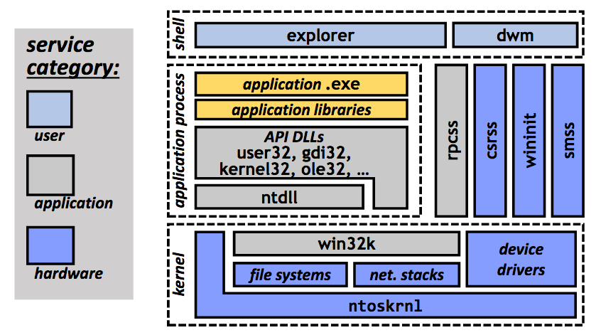
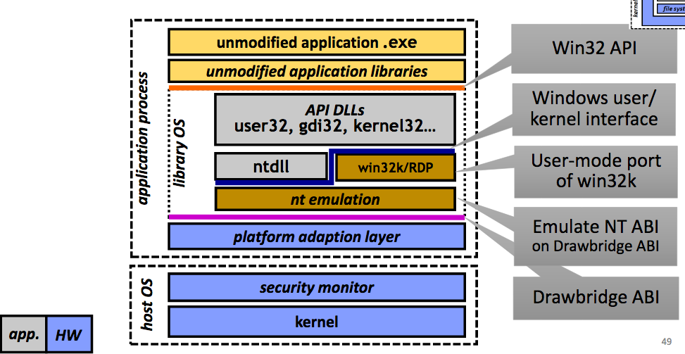

"Rethinking the Library OS from the Top Down"
Problem
How can we refactor a commerical OS to follow libOS architecture and achieve a better performance than VMM approach?
Background
- Three categories of services in OS implementations:

- Why does a guest OS need a kernel? Because the host interface is virtual hardware

System Design
-
Goals:
- Compatibility: Runs applications you use
- Lightweight: <1% of Windows library code
- Performance: 10x to 20x lower overheads than a VM
- Security: Secure isolation comparable to VM
- Mobility: Migrate running applications
- Generality: Independent evolution of host OS
- Manageability: Smaller "servicing" area
-
Hypothesis: it's possible to design a software ABI with the same properties as hardware ABI:
- Clearly specified, clean separation of concerns (No undocumented dependencies)
-
Minimally stateful:
- Registers, etc. are visible to guest OS/application
- State can be programmatically recreated
- Analogous to a stateless network protocol
-
Guest/Host ABI:
- Private virtual memory
- Threads, synchronization
- I/O streams
- Thread/process exit
- Time, random bits, handle reference management, checkpoint/restore
-
Refactoring the Desktop:
- Host OS manages hardware
- Application services in library
-
Desktop manager
- Trusted host process
- Remote Desktop protocol
- Stateless
- Shell can be remote
- Drawbridge Architecture:

-
Limitations:
-
Incomplete port of windows API
- Printer support
- Accelerated graphics
-
Support for multi-process applications (e.g., Outlook with Word as an editor, sharing state through windows subsystem)
-
Administrative tools will not work by design
- Need more low-level system access
-
-
End results:
- Refactored Windows 7 as a Library OS (80MB)
-
Functional benefits of VMs:
- Robust to changes in host system software
- Security isolation
- Migration
-
Drastically better scalability
- Run rich desktop applications
comments powered by Disqus